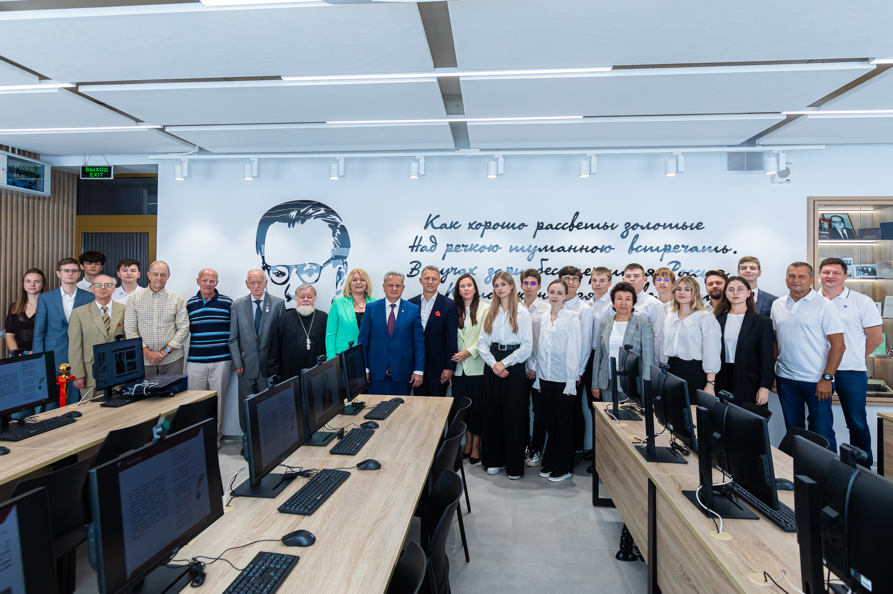

В новом учебном году студентам открыла двери новейшая цифровая лаборатория

Начало нового учебного года в Тимирязевке ознаменовало открытие новейшей цифровой учебно-научной лаборатории имени профессора А.С. Иванова – многолетнего заведующего кафедрой политической экономии университета. Старт работе новейшего суперсовременного образовательного пространства дали ректор, Академик РАН, профессор Владимир Иванович Трухачев и руководитель «МЗК Экспорт», внук Александра Серафимовича Иванова, выпускник Тимирязевской академии Николай Сергеевич Демьянов…
Студенты Тимирязевки стали финалистами конкурса Минобрнауки РФ "Стартап как диплом"

Стартап студентов Института экономики и управления АПК стал одним из лучших 15 проектов, отобранных для участия в финале конкурса Министерства науки и высшего образования РФ "Стартап как диплом". Тимирязевцы представили информационно-аналитическую систему мониторинга деградации пастбищ "CPV". С этим проектом они выступят в финале конкурса, который состоится 28 июня. В конкурсе участвовали студенты из вузов со всей России. Их проекты оценивались по цели и стратегии, уникальности, предполагаемым результатам, источникам и условиям финансирования, наличию интеллектуальной собственности, экономической эффективности, риску реализации и потенциалу…
Тимирязевская академия приняла участие в "GISIT2024"

В Якутске состоялся II Межрегиональный конкурс-хакатон геоинформационных разработок "GISIT2024". Командам необходимо было решить один из трех актуальных кейсов по разработке ГИС-платформ в области оценки туристского потенциала территории, устойчивой энергетики, цифрового земледелия. Тимирязевскую академию представляли сразу две команды "TimkaGIS" и "ITимка", подготовленные на базе новейшего проектного института цифровой трансформации АПК. Пройдя с успехом все чек-поинты, команда "TimkaGIS" заняла…
Практика по ГИС технологиям в Тимирязевской Академии

На прошлой неделе началась ознакомительная практика по геоинформационным системам в лаборатории ГИС и ДЗЗ. И сегодня она перешла из теоретической плоскости – в практическую! Сегодня наши студенты знакомились с научным оборудованием и проводили измерения на территории Тимирязевской академии, используя приборы, которые определяют координаты с разной точностью. Затем собранные данные были импортированы в проект QGIS и …